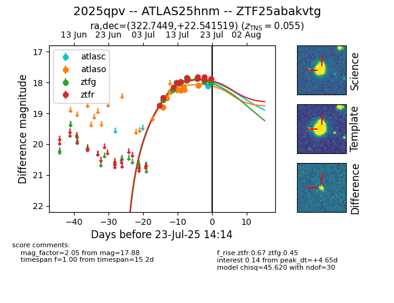

Target ZTF25abakvtg at 2025-07-23 11:52, see:
FINK: fink-portal.org/ZTF25abakvtg
Lasair: lasair-ztf.lsst.ac.uk/objects/ZTF25abakvtg
ALeRCE: alerce.online/object/ZTF25abakvtg
TNS: wis-tns.org/object/2025qpv
YSE: ziggy.ucolick.org/yse/transient_detail/2025qpv
alt names
ZTF25abakvtg (ztf,fink)
2025qpv (tns,yse)
ATLAS25hnm (atlas)
coordinates:
equatorial (ra, dec) = (322.7449,+22.54152)
galactic (l, b) = (73.7089,-20.62835)
photometry
last ztfg=17.97, ztfr=17.82
10 ztfg, 11 ztfr detections
